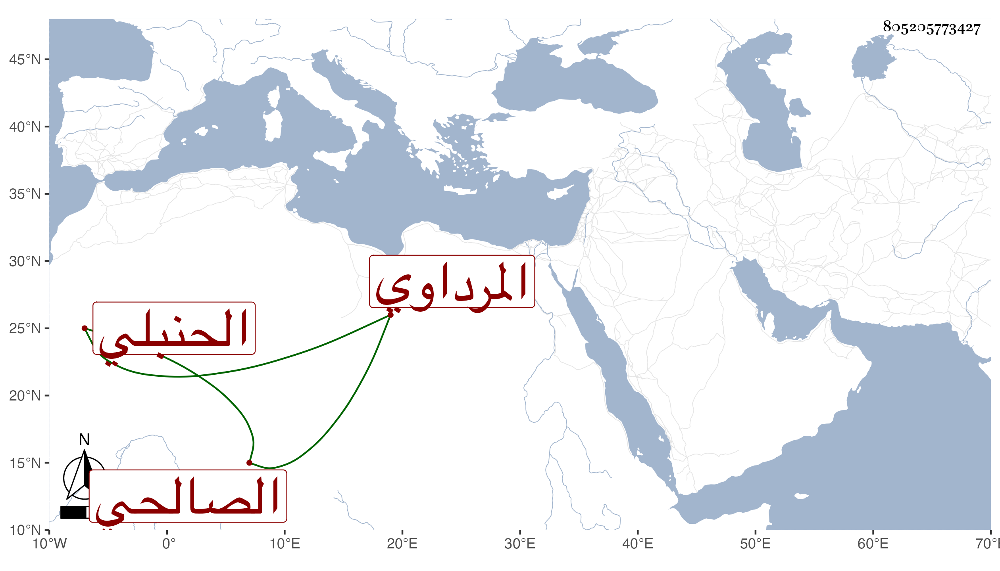

0902Sakhawi.DawLamic.ITO20230111-ara1.EIS1600.805205773427
Biography ID: 805205773427
26
محمد بن محمد بن أحمد بن عبد الله الشمس المرداوي الصالحي الحنبلي ويعرف بابن القباقبي . سمع في سنة ثمان وأربعين وسبعمائة من العماد أحمد بن عبد الهادي بن عبد الحميد المقدسي أجزاء ومن الجمال يوسف بن محمد بن عبد الله المرداوي جزءا ، وحدث . سمع منه الفضلاء كالحافظ ابن موسى ووصفه بالشيخ الصالح الإمام العالم ومعه الموفق الأبي في سنة خمس عشرة ، ذكره شيخنا في معجمه وقال أجاز لأولادي .
